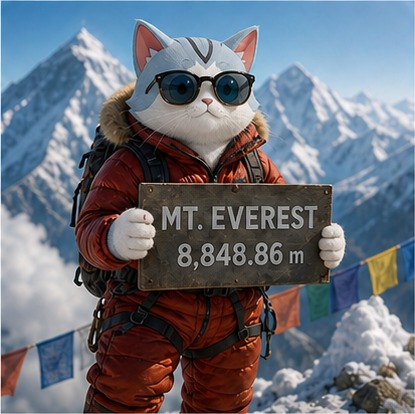

Why must a shop call validateTransfer after findReference?


Did you know? · Stay safe
Finding is not proving. findReference only says a transaction mentions the key; validateTransfer checks the recipient, amount, token, reference and memo.
❓ Test yourself: what do you know about Wen?
Community art, free to use. The fact comes from the checked base behind the Wen quiz; every claim has a status in the trust chain. Educational content, not financial advice.